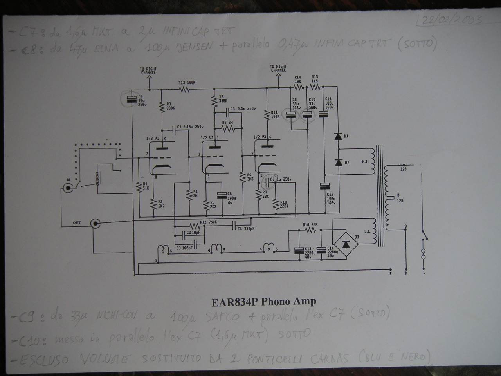

Improving the EAR 834 phono preamplifier
(realized in February 2003)
This was the first time that I have used the TEA (“Tino Esoteric Audio”) signature to firm something that I have done.
I was not so stupid to think that the EAR 834 phono preamplifier could be improved. That is quite obvious, because it has been designed by Tim De Paravicini, who is really a great audio guru, in particular for tubes and for electronics dedicated to the analog black vinyl. But I had a friend who bought it and believed that it was possible to improve it, so he asked me to do it. Browsing the network I come on the Thorsten web page, devoted to tweak this project. Unfortunately what he was suggesting was basically to build a new phono, including a bigger new case. I didn't want to go so far, also because the 834 is really a great value for its money (about 600 E), but if you completely rebuilt it the total cost will be quite different. So I have limited my “upgrades” to the following:
improving the output capacitors
improving the main power capacitors
Moreover the customer wanted also these upgrades:
changing the original ECC83 tubes with two NOS very good Telefunken
taking out the volume potentiometer and fix the gain at its maximum

You can see aside a scheme (may be not exact, for copyright problems) of the EAR 834. What I have basically done is:Change the output capacitor C7 from 1.6 uF MKT to 2 uF InfiniCAP TRT.
Change the C8 electrolitic from 47 uF ELNA to 100 uF Jensen bypassed by a 0.47 uF InfiniCAP TRT.
Change the C9 electrolitic from 33 uF NichiCon to 100 uF Safco bypassed by one of the original C7 1.6 uF MKT soldered on the bottom layer.
Using the other original C7 1.6 uF MKT to bypass the original 33 uF C10 electrolitic, soldering it on the bottom layer.
Bypassing the volume potentiometer with two Cardas internal wires.
It was quite hard to fit everything in the original small EAR 834 case, but you can do it.
How good was the results?
Well, I can't believe it, but the improvements were really good. The owner asked me how it was possible to fit a real “subwoofer” inside that small box, since the low frequencies becomes much stronger and still well damped. I don't know which upgrade was more important, the output capacitors, the power capacitors or the Telefunken tubes, but alltogheter it was worth for the money spent.
Tino © June 2007